Next: Connections (Links)
Up: Building Blocks of
Previous: Building Blocks of
Depending on their function in the net, one can distinguish three
types of units: The units whose activations are the problem input for
the net are called input units; the units whose output
represent the output of the net output units. The remaining
units are called hidden units, because they are not visible
from the outside (see e.g. figure  ).
).
In most neural network models the type correlates with the topological
position of the unit in the net: If a unit does not have input
connections but only output connections, then it is an input unit. If
it lacks output connections but has input units, it is an output unit.
If it has both types of connections it is a hidden unit.
It can, however, be the case that the output of a topologically
internal unit is regarded as part of the output of the network. The
IO-type of a unit used in the SNNS simulator has to be understood in
this manner. That is, units can receive input or generate output even
if they are not at the fringe of the network.
Below, all attributes of a unit are listed:
- no: For proper identification, every unit has a
number
 attached to it. This number defines the order in which the units are
stored in the simulator kernel.
attached to it. This number defines the order in which the units are
stored in the simulator kernel.
- name: The name can be selected arbitrarily by the user. It
must not, however, contain blanks or special characters, and has to
start with a letter. It is useful to select a short name that
describes the task of the unit, since the name can be displayed with
the network.
- io-type or io: The IO-type defines the function of
the unit within the net. The following alternatives are possible
- input: input unit
- output: output unit
- dual: both input and output unit
- hidden: internal, i.e. hidden unit
- special: this type can be used in any way, depending upon
the application. In the standard version of the SNNS simulator, the
weights to such units are not adapted in the learning algorithm
(see paragraph ).
- special input, special hidden, special output: sometimes
it is necessary to to know where in the network a special unit is
located. These three types enable the correlation of the units to the
various layers of the network.
- activation: The activation value.
- initial activation or i_act: This variable contains
the initial activation value, present after the initial loading of the
net. This initial configuration can be reproduced by resetting
( reset) the net, e.g. to get a defined starting state of the net.
- output: the output value.
- bias: In contrast to other network simulators where the
bias (threshold) of a unit is simulated by a link weight from a
special 'on'-unit, SNNS represents it as a unit parameter. In the
standard version of SNNS the bias determines where the activation
function has its steepest ascent. (see e.g. the activation function
Act_logistic). Learning procedures like backpropagation change
the bias of a unit like a weight during training.
- activation function or actFunc: A new activation is
computed from the output of preceding units, usually multiplied by
the weights connecting these predecessor units with the current unit,
the old activation of the unit and its bias. When sites are being
used, the network input is computed from the site values. The general
formula is:
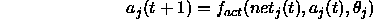
where:
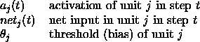
The SNNS default activation function Act_logistic, for
example, computes the network input simply by summing over all
weighted activations and then squashing the result with the logistic
function
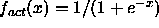
.
The new activation at time 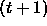
lies in the
range 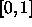
. The variable
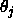
is the threshold of unit j.
The net input
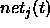
is computed with
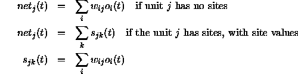
This yields the well-known logistic activation function
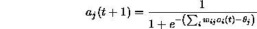
where:
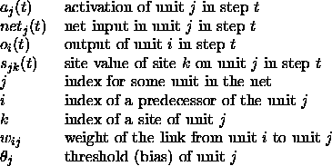
Activation functions in SNNS are relatively simple C functions which
are linked to the simulator kernel. The user may easily write his own
activation functions in C and compile and link them to the simulator
kernel. How this can be done is described later.
- output function or outFunc: The output function
computes the output of every unit from the current activation of this
unit. The output function is in most cases the identity function
(SNNS: Out_identity). This is the default in SNNS. The output
function makes it possible to process the activation before an
output occurs.
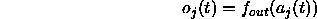
where:
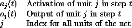
Another predefined SNNS-standard function, Out_Clip01 clips the
output to the range of
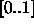
and is defined as follows:
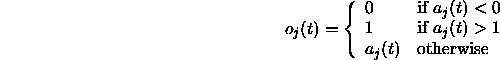
Output functions are even simpler C functions than activation
functions and can be user-defined in a similar way.
- f-type: The user can assign so called f-types
(functionality types, prototypes) to a unit. The unusual name is for
historical reasons. One may think of an f-type as a pointer to some
prototype unit where a number of parameters has already been defined:
- activation function and output function
- whether sites are present and, if so, which ones
These types can be defined independently and are used for grouping
units into sets of units with the same functionality. All changes in
the definition of the f-type consequently affect also all units of that
type. Therefore a variety of changes becomes possible with minimum
effort.
- position: Every unit has a specific position
(coordinates in space) assigned to it. These positions consist of 3
integer coordinates in a 3D grid. For editing and 2D visualization
only the first two (x and y) coordinates are needed, for 3D
visualization of the networks the z coordinate is necessary.
- subnet no: Every unit is assigned to a subnet.
With the use of this variable, structured nets can be displayed more
clearly than would otherwise be possible in a 2D presentation.
- layers: Units can be visualized in 2D in up to 8
layers. Layers can be displayed selectively.
This technique is similar to a presentation with several
transparencies, where each transparency contains one aspect or part of
the picture, and some or all transparencies can be selected to be
stacked on top of each other in a random order. Only those units which
are in layers (transparencies) that are 'on' are displayed. This way
portions of the network can be selected to be displayed alone. It is also
possible to assign one unit to multiple layers. Thereby it is
feasible to assign any combination of units to a layer that represents
an aspect of the network.
- frozen: This attribute flag specifies that activation
and output are frozen. This means that these values don't change
during the simulation.
All `important' unit parameters like activation, initial activation,
output etc. and all function results are computed as floats with nine
decimals accuracy.
Next: Connections (Links)
Up: Building Blocks of
Previous: Building Blocks of
Niels.Mache@informatik.uni-stuttgart.de
Tue Nov 28 10:30:44 MET 1995